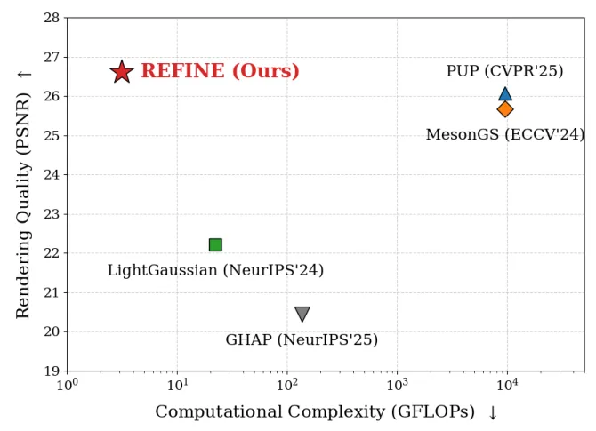
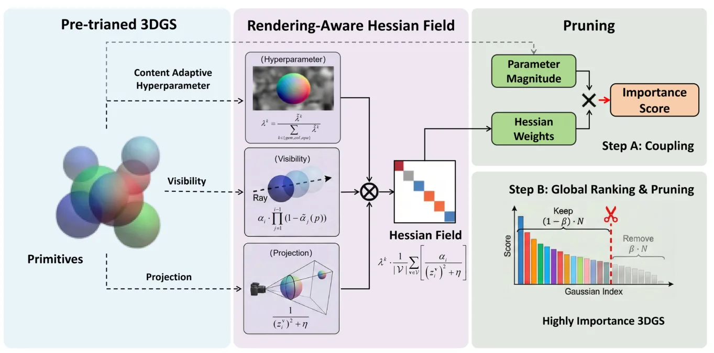

REFINE：基于免渲染 primitive 重要性的超高效 3DGS 剪枝REFINE: Super-efficient 3D Gaussian Splatting Pruning via Rendering-Free Primitive Importance
对大规模 3DGS 地图压缩和端侧部署价值很高，3000× 复杂度下降信号强；需等待代码验证质量-压缩率权衡。
一句话工作总结
REFINE 用解析 Hessian 近似和免渲染重要性评估加速 3DGS 剪枝，目标是大幅降低地图压缩成本。
摘要
现有 3DGS 剪枝方法常面临质量严重下降或计算开销过高的问题。REFINE 提出一个以 rendering-free primitive importance metric 为核心的高加速剪枝框架。该方法利用解析近似的 rendering-aware Hessian field 估计删除单个 primitive 所导致的期望感知误差；通过建模 visibility、projection geometry 和内容自适应超参数的联合调制，绕过昂贵的 forward rendering passes，并推导 anisotropic perceptual weight field 作为 primitive importance 的高保真代理。跨多个 benchmark 的实验显示，REFINE 在保持竞争性渲染质量的同时，相比 SOTA 剪枝方法把剪枝相关计算复杂度降低约 3000 倍。
Existing pruning methods for 3D Gaussian splatting (3DGS) suffer from either severe quality degradation or prohibitive computational overhead. In this paper, we propose REFINE, a highly accelerated 3DGS pruning framework centered on a novel rendering-free primitive importance metric. Our approach leverages an analytically approximated, rendering-aware Hessian field to quantify the expected perceptual error induced by the removal of individual primitives. By modeling the joint modulation of visibility, projection geometry and the content adaptive hyperparameter, we entirely bypass costly forward rendering passes and derive an anisotropic perceptual weight field that serves as a high-fidelity proxy for primitive importance. Extensive experiments across multiple benchmark datasets demonstrate that REFINE maintains highly competitive rendering quality while achieving an unprecedented $3,000\times$ reduction in pruning-related computational complexity compared to state-of-the-art pruning methods.
中文解读摘录
- 作者：Yongfei Guo, Qizhou Huo, Xuan Sun, Yuanhao Gong；类别：cs.CV / cs.GR / cs.MM / eess.IV / math.OC；发布日期：2026-06-06；采集 score=17
- 核心问题：标准 3DGS photometric loss 对平坦区和结构丰富区一视同仁，容易牺牲边缘、轮廓和细节；EGGS 虽引入 edge-guided weighting，但主要依赖一阶梯度和线性权重。
- 方法亮点：LEGS 用二阶 Laplacian 结构响应替代一阶梯度响应，并通过非线性 response-to-weight 函数生成 pixel-wise loss 权重；渲染管线不变，属于可插拔的 loss-level 扩展。
- 结果信号：在完整 Tanks&Temples 与 Mip-NeRF360 上，论文称相对 3DGS 最高提升 1.68 dB PSNR，相对 EGGS 最高提升 0.52 dB；迁移到 FastGS/FasterGS 后最高仍可提升 1.69 dB。
- 关注价值：如果代码可复现，它是低侵入式提升 3DGS 地图边缘清晰度和细节保真的方法，适合与 SLAM/重建后的 Gaussian 地图优化阶段结合。
图表/页面预览
{kind=link}

{kind=link}
